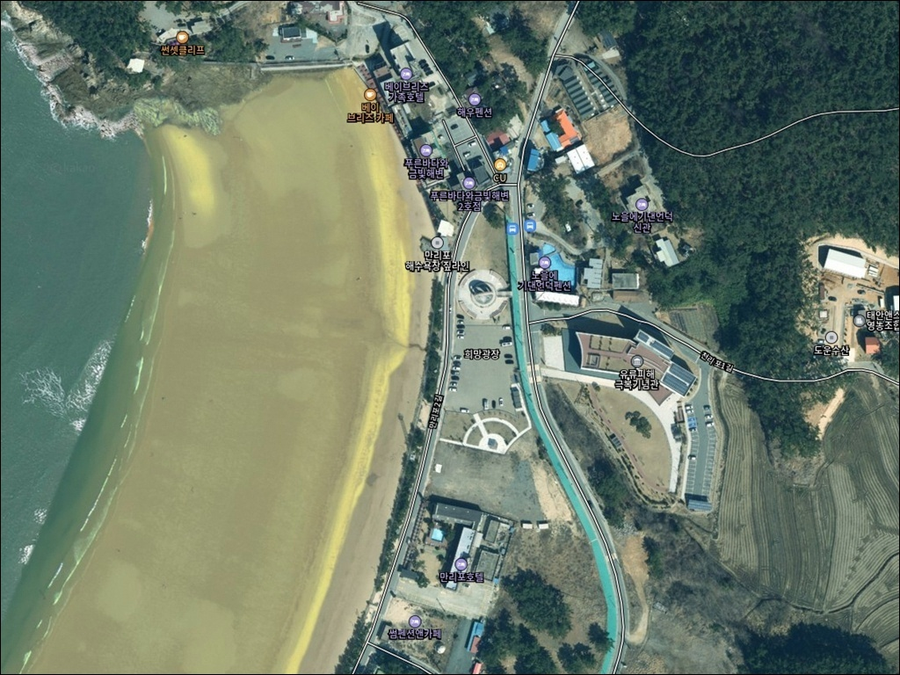
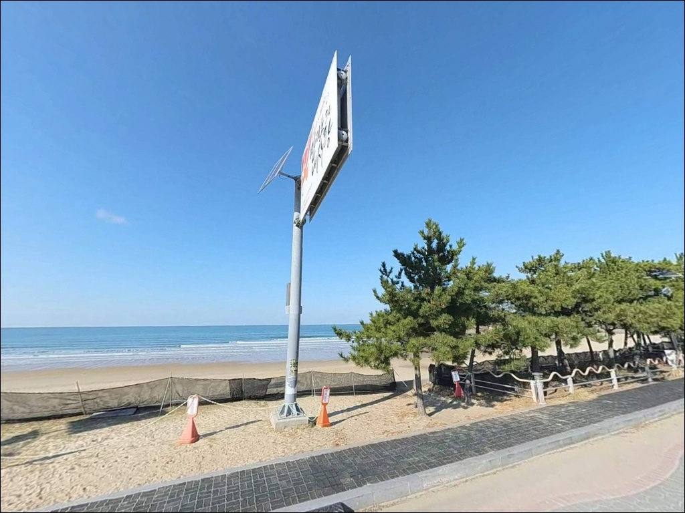
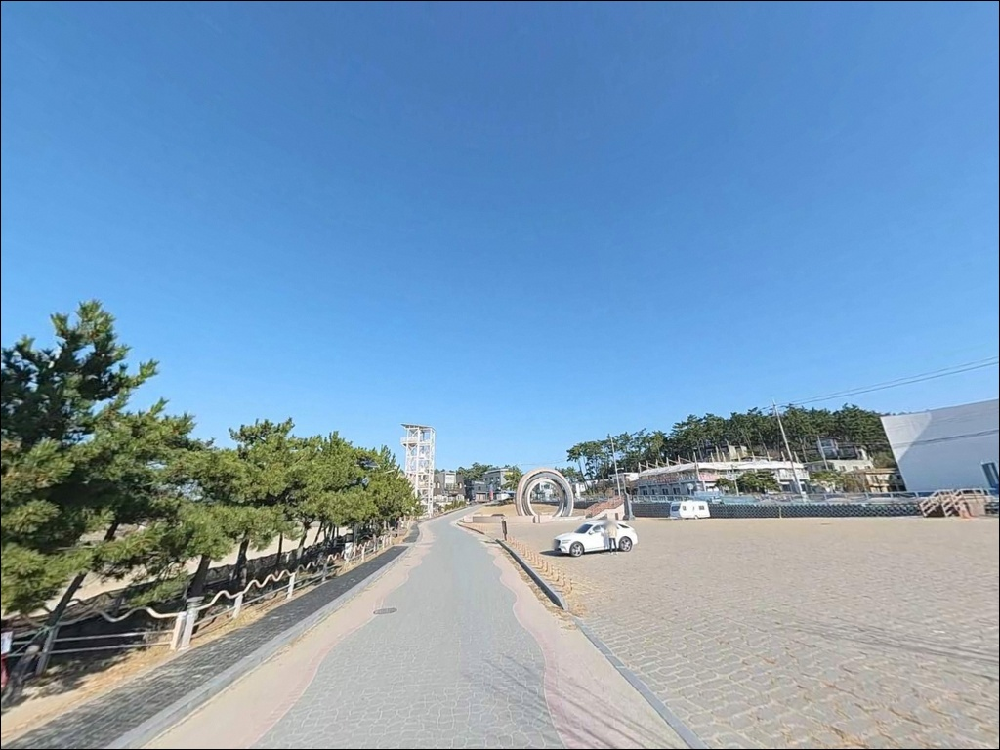
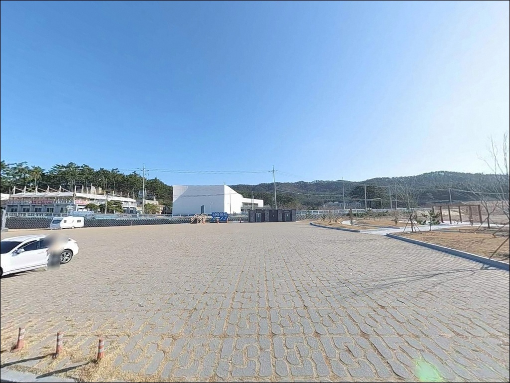
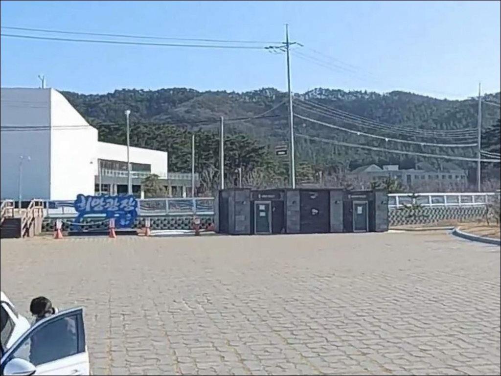
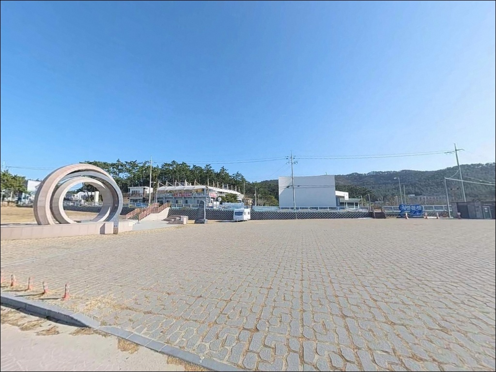
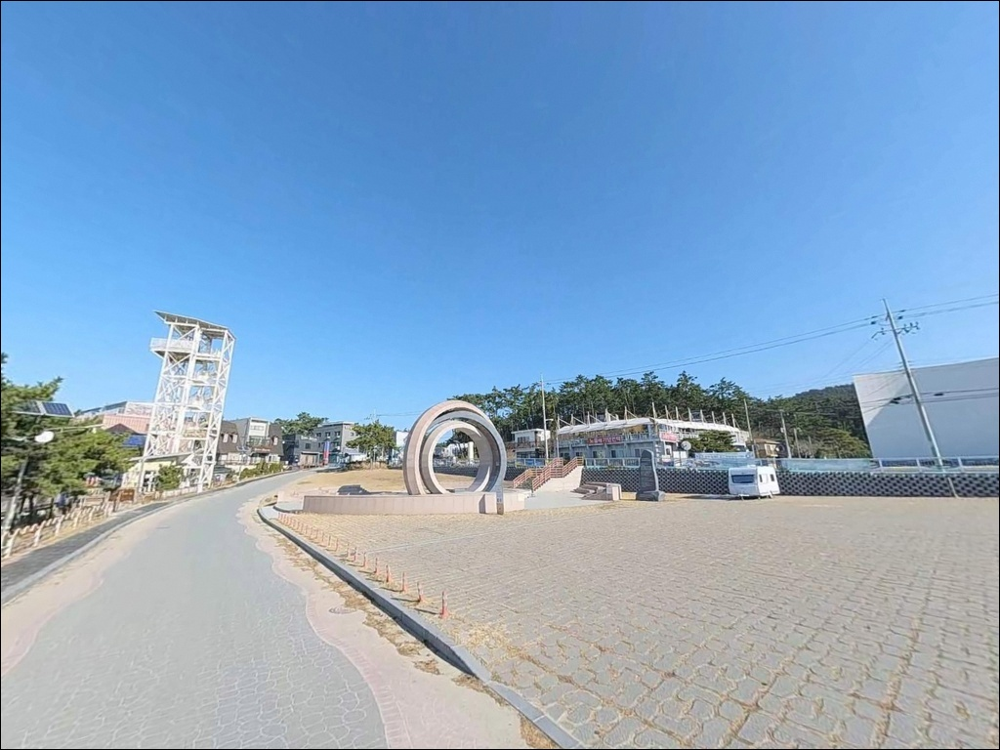
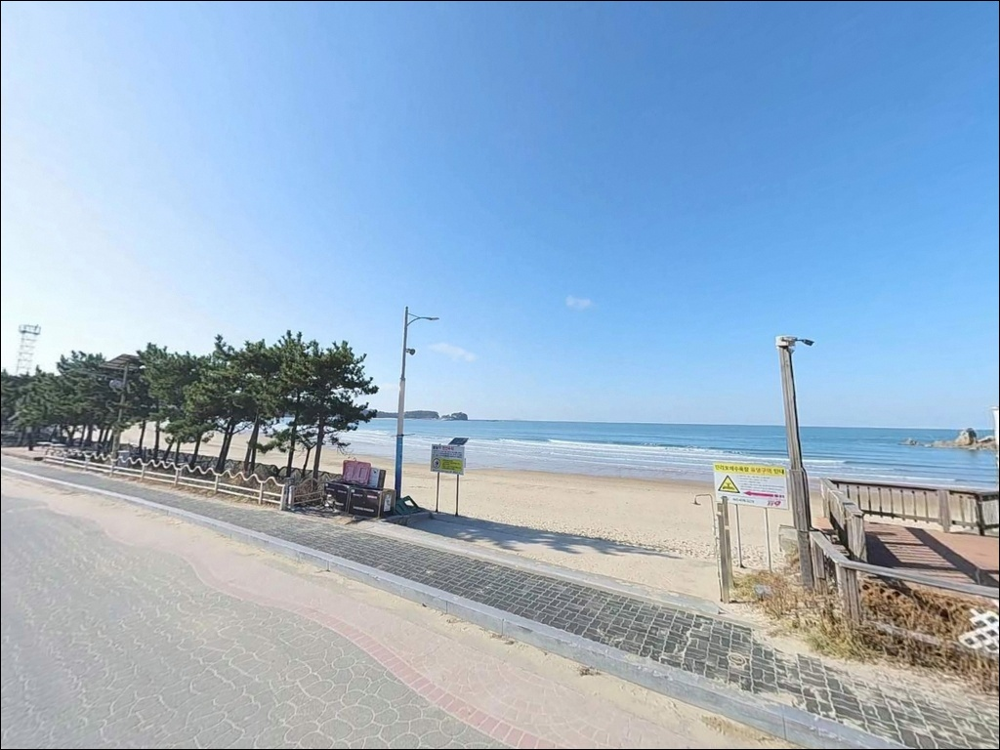
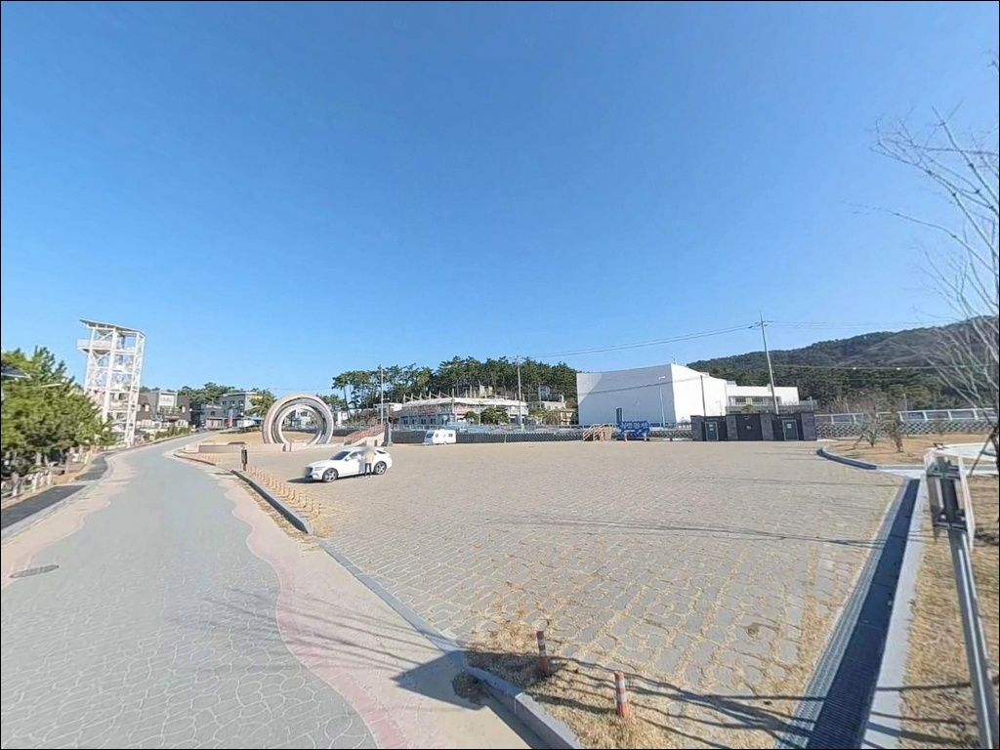

이 페이지에는 광고(제휴 링크 포함)가 있으며, 광고 링크를 통해 구매하면 운영자가 판매 수익 또는 수수료를 받을 수 있습니다. 포인트 사진: 카카오맵 스카이뷰·로드뷰. 이 페이지의 지도·사진 이미지는 카카오맵의 실제 서비스 이미지와 다를 수 있습니다.

만리포 희망광장
충남 태안군 소원면 의항리 1122
서해 조석간만 차를 고려하지 않고
만리포 해변에 들어서면
썰물 구간에서 수심이 사라진 백사장 앞에
자리만 잡게 됩니다.
만리포 일대는 하루 두 번 수위가 크게 바뀌는
서해 특성상, 입장 타이밍에 따라
같은 자리에서도 낚시 가능 여부가 달라지는
구조입니다.
만리포 희망광장
충남 태안군 소원면 의항리 1122
이 글은 만리포 희망광장의 진입 환경, 낚시 지형 특성,
차박 가능 조건, 물때 기반 판단 기준에 집중합니다.
조황 단정이나 특정 어종 보장은
이 글의 범위에 포함되지 않습니다.
만리포 희망광장은 길이 약 2.5km의 만리포해수욕장
북쪽 끝에 위치하며, 뭍닭섬 산책로 입구와
이어지는 무료 임시주차장을 낀 해안 거점입니다.
백사장 남쪽으로는 완만한 사빈이 이어지고,
북쪽으로는 해안 데크와 암반 구간이 시작되어
두 가지 지형을 함께 활용할 수 있는
구조로 되어 있습니다.

만리포해수욕장 메인 도로에서 북쪽 끝 방향으로
이어지는 포장 아스팔트 도로가
희망광장 진입로입니다.
도로 상태가 평탄하고 폭도 일반 차량 기준
통행에 무리가 없는 수준이라,
진입 자체의 난이도는 낮은 편입니다.
희망광장은 유류피해 극복 관련 행사 공간 전면을
상시 개방형 무료 임시주차장으로 운영하는 곳입니다.
광장 구조상 대형 차량도 회차가 가능한 편이며,
캠핑 장비를 실은 차량의 진출입도
비교적 수월한 여건입니다.
뭍닭섬 산책로 입구까지는 주차 후 도보
3~5분 수준의 짧은 거리입니다.
낚시 자리를 잡을 경우 이 산책로 인근 암반 구간 또는
해수욕장 사빈 끝자락을 활용하는 방식이
일반적인 동선입니다.

만리포 희망광장 임시주차장은 무료로 이용 가능하며,
낚시를 마치고 차 안에서 하룻밤 머무는
비상주형 이용 방식으로 활용하는 이들이 있습니다.
관광지 인근이라 가로등이 있어 야간 시야가 확보되는 편이며,
뭍닭섬 산책로 방향으로는
민가 밀집도가 낮아 상대적으로 조용한
환경을 기대할 수 있습니다.
다만 여름 성수기에는 만리포해수욕장 특성상
야간에도 차량과 인원 이동이 있을 수 있습니다.
차박을 목적으로 한다면 성수기를 피하는 편이
체류 여건에서 유리한 선택입니다.
만리포 일대는 태안해안국립공원 구역에 포함되어 있습니다.
국립공원 내에서는 지정된 구역 외 야영·취사가
원칙적으로 허용되지 않습니다.
차 안에서 쉬는 수준의 비상주형 이용이라도
출발 전 태안해안국립공원 관할 기관에
허용 여부를 확인하고 가는 것이 안전한 준비입니다.

만리포해수욕장은 태안반도의 대표 관광지 중 하나로,
반경 3km 이내에 식당과 편의점이 다수 영업 중입니다.
도보권 내에서 식수·얼음·간식류를 조달할 수 있는
인프라는 충분한 편입니다.
다만 성수기에는 대기가 길거나
주차가 혼잡해지는 시간대가 발생할 수 있어
이른 시간 이용이 더 여유롭습니다.
뭍닭섬 산책로는 무료로 연중 이용 가능하며,
이용 시간 제한 없이 상시 개방되어 있습니다.
가벼운 이동 경로를 겸한 해안 조망 코스로,
낚시 전후 산책 동선으로 활용하기 좋은 구간입니다.
응급 상황 발생 시 태안읍내까지
약 14~15km 거리입니다.
야간 낚시나 1박 체류를 계획한다면
비상약품과 연락처는 출발 전에 확인해 두는 것이
기본 준비입니다.

만리포 희망광장 출조 전 가장 먼저 확인할 것은
물때입니다.
서해는 조석간만 차가 크고,
만리포 일대는 하루 두 번 수위 변화가 큰 편입니다.
바다타임에서 의항리 기준 물때를 확인하고
들물 시작 전후 타이밍을 기준으로
입장 시각을 맞추는 것이 이 포인트에서
제대로 낚시할 수 있는 기본 조건입니다.
서해안 특성상 기상 변화도 빠른 편입니다.
출조 당일 아침 기상청 파랑·풍랑 예보를
다시 한번 확인하는 것이 안전합니다.
뭍닭섬 산책로 암반 구간이나 갯바위를 활용할 계획이라면
미끄럼 방지 신발과 구명조끼는 필수입니다.
여름 해수욕장 운영 기간에는 해변 일부 구간에서
낚시 가능 시간대가 제한될 수 있습니다.
성수기 방문 시 현장에서 관리 기준을 먼저 확인하고
자리를 잡는 것이 헛걸음을 피하는 방법입니다.
야간 낚시 시에는 헤드랜턴과 여분 배터리를
반드시 챙겨야 합니다.

만리포해수욕장은 길이 약 2.5km, 폭 250m 수준의
넓은 사빈 해변입니다.
전반적인 수심 경사가 완만한 구조라
채비를 멀리 던져 먼 곳의 수심권을 노리는
원투낚시에 지형적으로 유리한 편입니다.
파도가 만들어내는 홈통(물골) 구간이 형성될 경우
그 경계선이 핵심 포인트가 됩니다.
해수욕장 북단 뭍닭섬 방향으로 이동하면
사빈에서 암반 지형으로 전환되는 구간이 시작됩니다.
이 경계 구간은 수심이 조금 더 빠르게 변하는 지점으로,
루어 채비나 가벼운 에깅을 시도해볼 수 있는
지형 조건을 갖추고 있습니다.
다만 데크 구조물이 있는 산책로 구간에서의
본격 낚시는 제한적일 수 있어
접근 가능한 암반 구간을 직접 확인하고
자리를 잡아야 합니다.
물때를 읽지 않으면 만리포 해변은
자리를 잡는 곳이 아니라 수심을 잃는 곳이 됩니다.
들물이 차오를 때 수심이 확보되는 구간과
조류가 형성되는 방향을 먼저 파악해 두면
입장 후 자리 선택 시간을 줄일 수 있습니다.
최신 조황은 가기 전에 "만리포 방파제 낚시",
"만리포 해수욕장 조황" 키워드로 검색해 보시기 바랍니다.

이 포인트에서 기본 스타일은 원투낚시입니다.
완만한 수심 경사와 넓은 백사장은
멀리 던져 바닥층을 탐색하는 방식에
잘 맞는 구조입니다.
들물이 차오르는 타이밍에 홈통이 형성되면
그 구간을 집중 공략하는 것이
효율적입니다.
백사장 사빈에서 암반 구간으로 전환되는 북단 경계에서는
서프 루어나 소형 메탈 채비로
연안 어종을 노리는 루어낚시를 시도해볼 수 있습니다.
암반 지형에 은신하는 우럭·노래미류가
수심이 확보되는 타이밍에 활성을 보이는 편이라,
들물 타이밍에 암반 경계를 탐색하는
접근이 어울립니다.
에깅도 가을 시즌에 노려볼 수 있는 스타일입니다.
갯바위와 암반이 접한 북단 구간은
갑오징어가 연안으로 붙는 시즌에
에기를 움직이기 좋은 지형 조건을 갖추고 있습니다.
다만 조류가 빠른 타이밍에는
채비가 흐르는 속도가 빨라
조금 전후 또는 정조 타이밍이 에깅에 유리합니다.

만리포 해변 여건이 여의치 않을 때
가장 먼저 고려할 대안은
모항항 방파제입니다.
남쪽으로 차로 약 5분 거리에 위치한 국가어항으로,
내항과 부두 곳곳에 낚시 포인트가 형성되어 있고
원투낚시와 찌낚시 모두 가능한 구조입니다.
북쪽으로는 천리포 방파제가 있습니다.
만리포에서 차로 5~10분 거리이며,
방파제 구조를 갖추고 있어 내항 쪽 찌낚시와
외항 원투를 함께 운용할 수 있는 대안입니다.
만리포와 같은 해안선상에 위치해
물때와 기상 조건이 비슷하게 적용됩니다.
체험형 낚시를 원하거나 가족 동반 출조라면
의항리 해상낚시공원도 고려해볼 수 있습니다.
해상 구조물 기반의 관리형 낚시 시설로,
방파제 또는 갯바위 낚시와는 성격이 달라
스타일에 맞게 선택하는 것이
적합합니다.

원투낚시나 루어낚시를 즐기는 낚시인이라면
만리포 희망광장은 백사장과 암반이 함께 있어
복수의 스타일로 접근할 수 있는 구조입니다.
서해 특성에 익숙한 낚시인일수록
이 포인트의 물때 변화를 잘 읽을 수 있고,
그 차이가 조과로 이어지는 편입니다.
반면 물때 확인 없이 썰물 시간대에 진입하거나,
여름 성수기에 해수욕장 운영 중
해변 낚시 자리를 확보하려 한다면
기대했던 자리를 얻지 못할 수 있습니다.
물때 확인, 국립공원 야영 기준 사전 파악,
성수기 시간대 조율,
이 세 가지를 갖추고 방문하면
만리포 해변에서 온전히 낚시에 집중할 수 있습니다.
무료 주차 공간에 차를 세우고
넓은 서해 백사장 앞에서 원투 채비를 날리다
날이 어두워지면 그대로 차 안에서 하룻밤 쉬어가는 일정을
계획한다면, 국립공원 이용 기준만 먼저 정리해 두면
낚시와 차박 모두 만족스러운 출조가 될 수 있는 곳입니다.